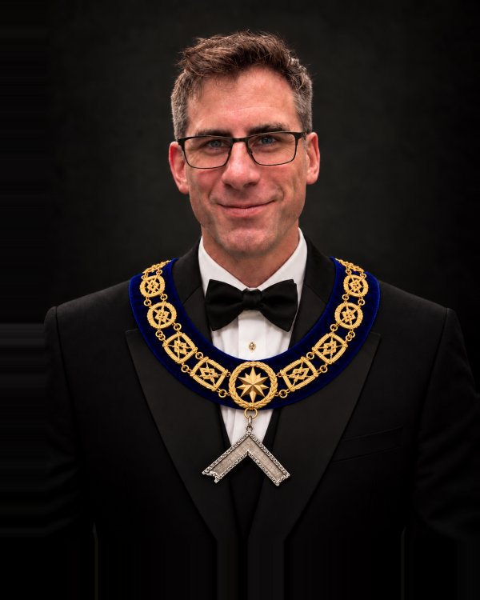
W. Bro. Wesley Thompson
Worshipful Master
Biography
Biography to come.
From the first officers of 1843 to the brethren serving today, this archive preserves the leadership and continuity of St. John’s Lodge No. 63.

Worshipful Master
Biography to come.
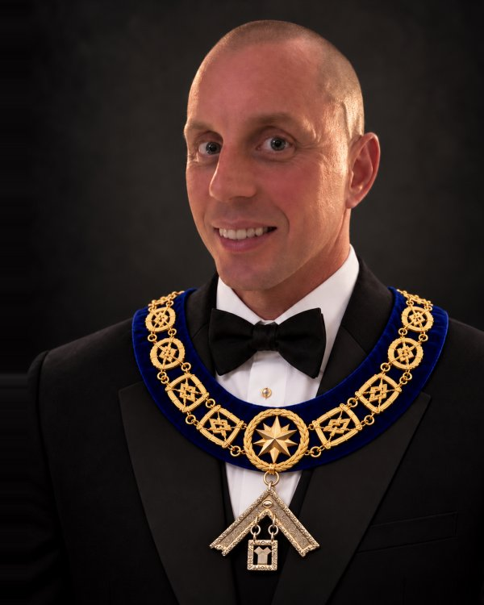
Immediate Past Master
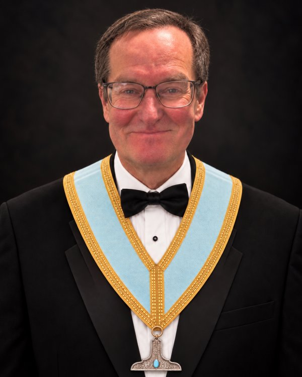
Senior Warden
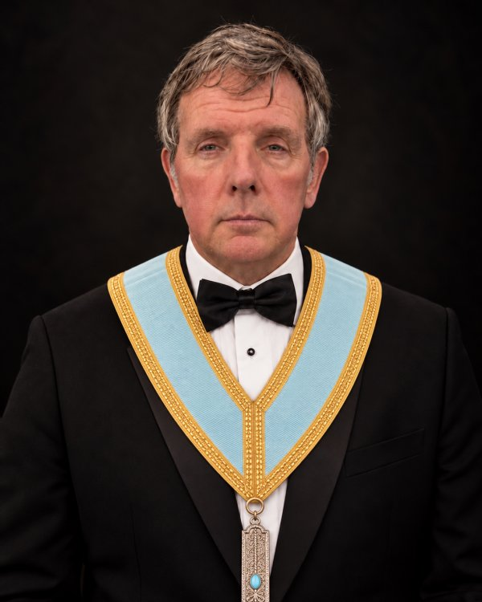
Junior Warden
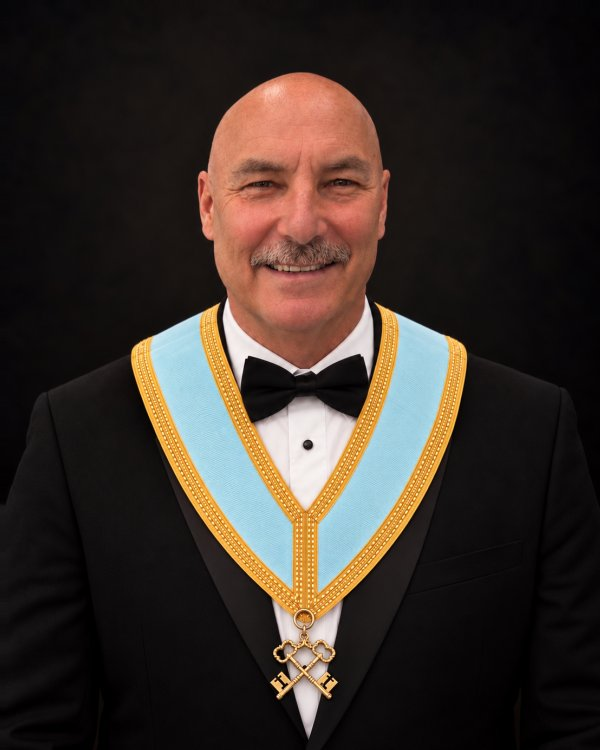
Treasurer
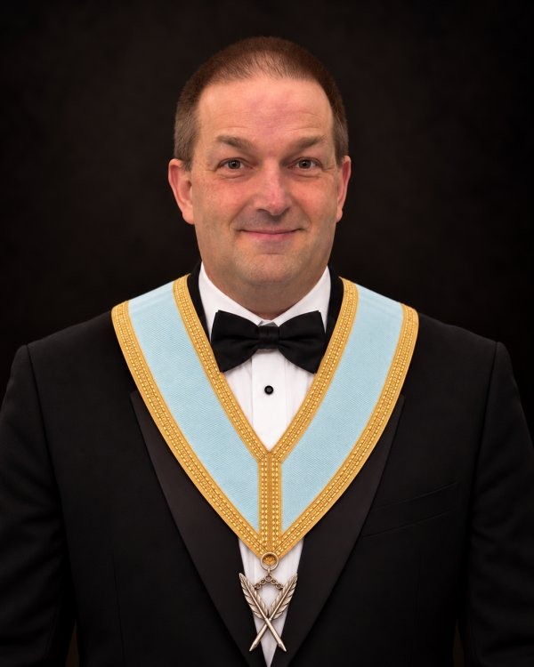
Secretary
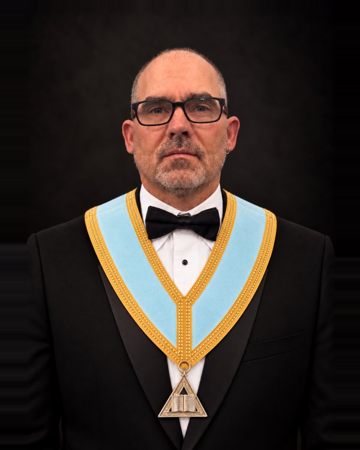
Chaplain
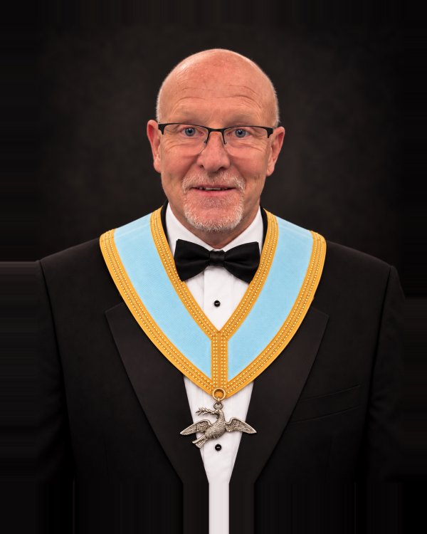
Senior Deacon
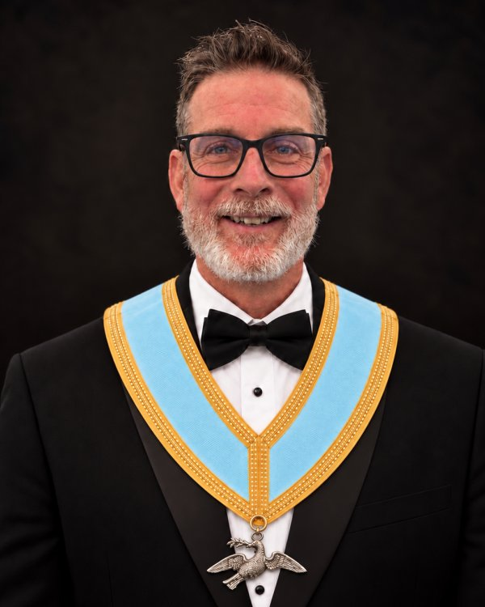
Junior Deacon
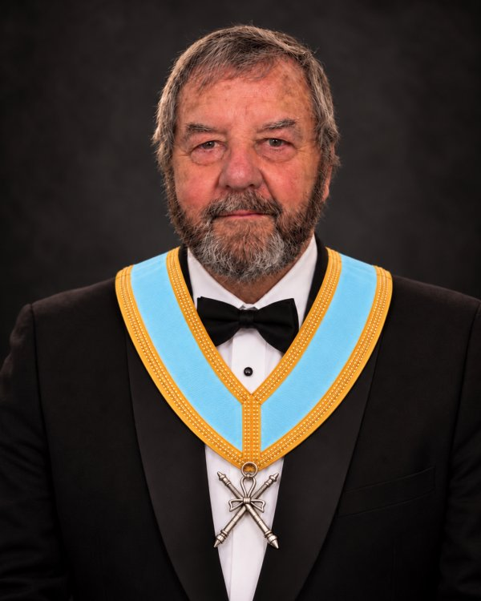
Director of Ceremonies
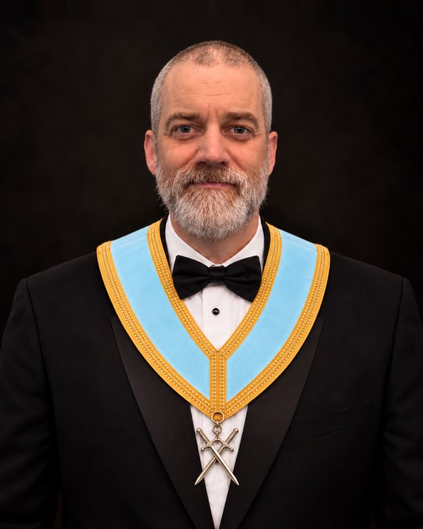
Inner Guard
Tyler
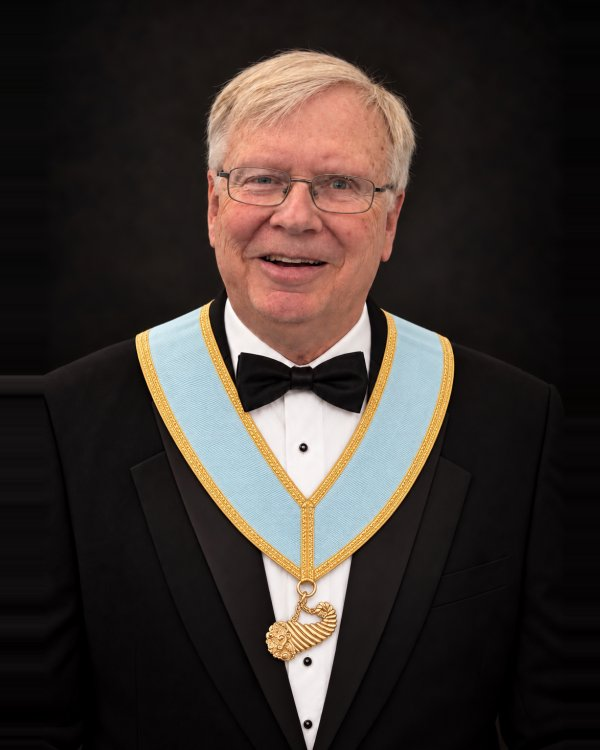
Stewards
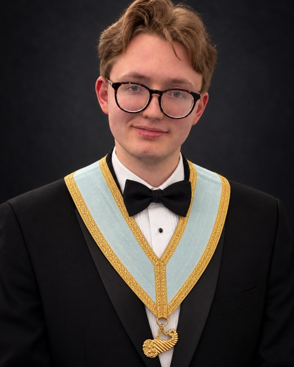
Stewards

Web Developer
Direct descendant of Charter Member Andrew Paul
Draft — list pending confirmation by the Lodge Secretary.
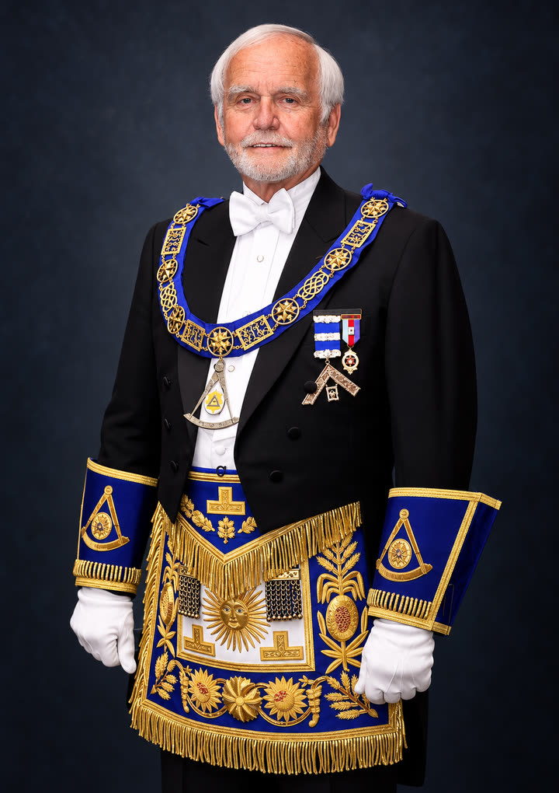
Past Master (1993–1994)
Initiated in St. John's Lodge No. 63 in 1983 and Worshipful Master in 1994–95, he served as Grand Master of the Grand Lodge of Canada in the Province of Ontario from 2017 to 2019.
Read his full biography (Grand Lodge of Canada in the Province of Ontario)
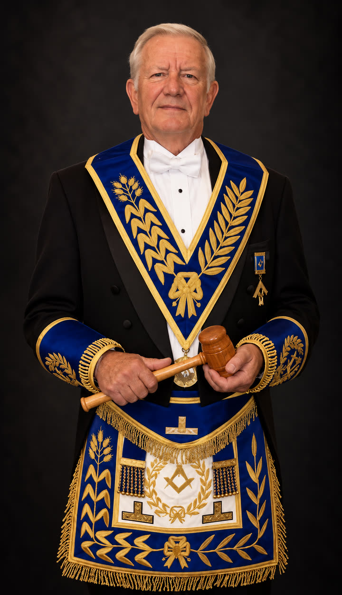
Past District Deputy Grand Master, Ottawa District 1 (2009–2010)
Biography to come.
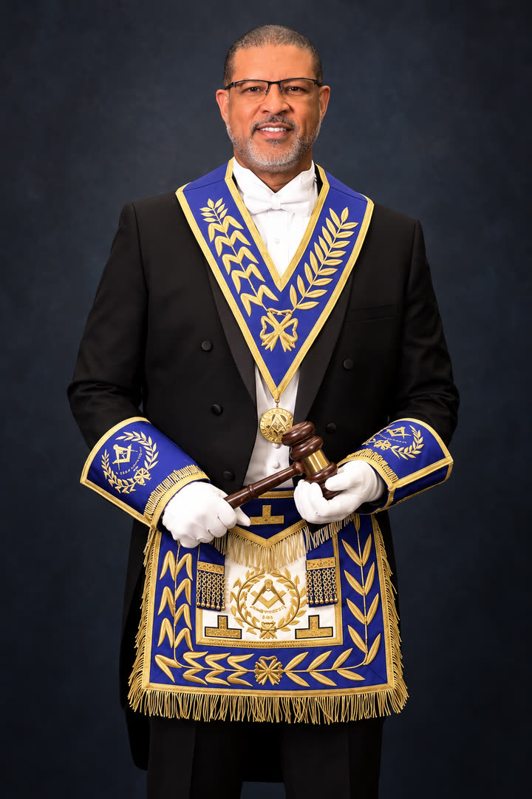
Past District Deputy Grand Master
R.W. Bro. Eustace "Sam" Roberts was born in St. John's, Antigua, and immigrated to Canada in 1970. He served in the Royal Canadian Navy as a Marine Engineer aboard HMCS Athabasca and HMCS Ojibwa, then had a long career with the Cornwall and Ottawa Police Services. Initiated into Acacia Lodge No. 561 in 2010, he was Worshipful Master in 2016–2017 and DDGM of Ottawa District One in 2024–2025, and later affiliated with St. John's Lodge No. 63.
Read his full biography in the Ottawa District 1 History 2024–2025, page 35
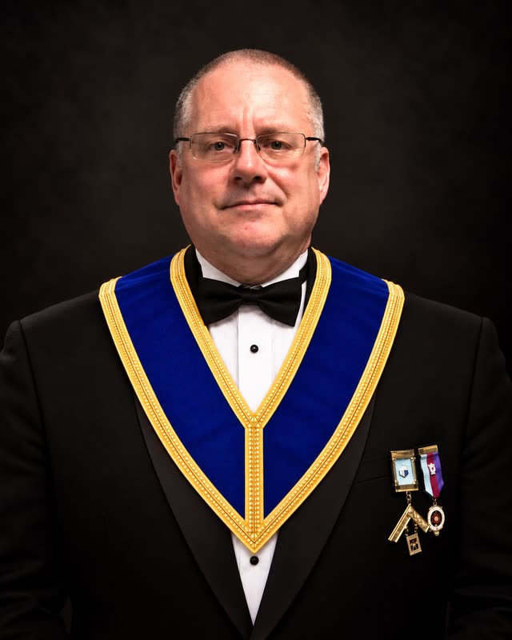
Past Master (2012–2013)
Initiated in St. John's Lodge No. 63 in 2006, he was installed as Worshipful Master in 2012 and appointed Grand Standard Bearer in 2017.
Read his full biography (Ottawa District 1, 2017–18)
Grand Lodge rank, Director of Ceremonies
Biography to come.
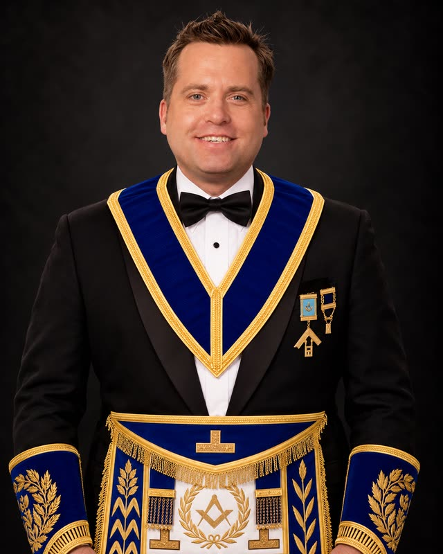
Past Master (2010–2011)
Biography to come.
Brethren who served are honoured on the Military Service page.
The archive stays compact by using nested accordions: each century opens into decades. Historical decades list the Worshipful Master for each year, and the current year keeps a full officer roster.
Worshipful Masters from 2000 to 2018 are listed from the lodge history. The 2026–27 entry is the current officer roster.
| Office | Name | Notes |
|---|---|---|
| Worshipful Master | W. Bro. Wesley Thompson | Current |
| Immediate Past Master | W. Bro. Corey Snow | Current officer |
| Senior Warden | Bro. Peter Schmidt | Current officer |
| Junior Warden | Bro. Greg Forsyth | Current officer |
| Treasurer | Bro. Mark Dorland | Current officer |
| Secretary | W. Bro. Andrew Valley | Current officer |
| Chaplain | W. Bro. Donovan Hastie | Current officer |
| Senior Deacon | Bro. James Hamilton | Current officer |
| Junior Deacon | Bro. Frank Horan | Current officer |
| Director of Ceremonies | V.W. Bro. Steve Kipp | Current officer |
| Inner Guard | Bro. Alan Gschwind | Current officer |
| Tyler | W. Bro. Phil Tanner | Current officer |
| Stewards | Bro. Braden Rogers and Bro. Duncan Rogers | Current officer |
| Year | Worshipful Master |
|---|---|
| 2017–2018 | W. Bro. Rob Clow |
| 2016–2017 | W. Bro. Joseph Tereschuk |
| 2015–2016 | W. Bro. Andrew Valley |
| 2014–2015 | W. Bro. Donovan Hastie |
| 2013–2014 | W. Bro. Corey Snow |
| 2012–2013 | V.W. Bro. Gord Echlin |
| 2011–2012 | V.W. Bro. Steve Kipp |
| 2010–2011 | V.W. Bro. Shawn Todd |
| Year | Worshipful Master | Note |
|---|---|---|
| 2009–2010 | V.W. Bro. Harry Baker | |
| 2008–2009 | V.W. Bro. Phil Pilon | |
| 2007–2008 | W. Bro. Bernie Duffen | |
| 2006–2007 | V.W. Bro. Phil Pilon | |
| 2005–2006 | W. Bro. Michael Hoult | |
| 2004–2005 | R.W. Bro. Ivor Bayley | |
| 2003–2004 | W. Bro. Blane Mercier | |
| 2002–2003 | W. Bro. Rob Gracie | W. Bro. Rob Gracie died September 25, 2002. W. Bro. Jim McIsaac was elected to fill the Chair of King Solomon for the remainder of the year 2002 - 2003; however, Past Masters took turns sitting in the East at each meeting. |
| 2001–2002 | W. Bro. Eric Morgan | |
| 2000–2001 | V.W. Bro. Phil Pilon |
Worshipful Masters from the lodge Past Masters list.
| Year | Worshipful Master |
|---|---|
| 1999–2000 | W. Bro. Jim McIsaac |
| 1998–1999 | W. Bro. Ron Hodgins |
| 1997–1998 | W. Bro. James Birtch |
| 1996–1997 | W. Bro. Miles Kirkendall |
| 1995–1996 | W. Bro. Steve Rothwell |
| 1994–1995 | W. Bro. Arthur Nash |
| 1993–1994 | M.W. Bro. Paul E. Todd |
| 1992–93 | W. Bro. J. Gary Nicholson |
| 1991–92 | V.W. Bro. Robin Rogers |
| 1990–91 | V.W. Bro. Harry Baker |
| Year | Worshipful Master |
|---|---|
| 1989–90 | W. Bro. Albert Lackey |
| 1988–89 | W. Bro. Brent Reid |
| 1987–88 | W. Bro. Ian Bowen |
| 1986–87 | V.W. Bro. Roy Coker |
| 1985–86 | W. Bro. Fraser Ellis |
| 1984–85 | W. Bro. Mervin Bonney |
| 1983–84 | W. Bro. Ian Doig |
| 1982–83 | W. Bro. Garry Murphy |
| 1981–82 | W. Bro. Harry Morris |
| 1980–81 | V.W. Bro. G.A. Docker |
| Year | Worshipful Master |
|---|---|
| 1979–80 | W. Bro. Victor Gilmour |
| 1978–79 | W. Bro. Douglas Gibson |
| 1977–78 | W. Bro. John Tennant |
| 1975–76–77 | V.W. Bro. Clarence Cassibo |
| 1974–75 | V.W. Bro. Dieter R. Jeschor |
| 1973–74 | W. Bro. Andrew J. Dickie |
| 1972–73 | W. Bro. M. Ward Crampton |
| 1971–72 | R.W. Bro. R.E. Shane |
| 1970–71 | V.W. Bro. G.A. Docker |
| Year | Worshipful Master |
|---|---|
| 1969–70 | W. Bro. W. Howard Edwards |
| 1968–69 | V.W. Bro. Clarence Cassibo |
| 1967–68 | W. Bro. T. Harold James |
| 1966–67 | W. Bro. G.M. Nobes |
| 1965–66 | V.W. Bro. Cecil R. Ruttle |
| 1964–65 | W. Bro. J.A. Hobbs |
| 1963–64 | W. Bro. F.K. McEwen |
| 1962–63 | W. Bro. W.J. Armstrong |
| 1961–62 | W. Bro. G.C. Crampton |
| 1960–61 | W. Bro. W.E.S. Root |
| Year | Worshipful Master |
|---|---|
| 1959–60 | W. Bro. D.H. Menzies |
| 1958–59 | W. Bro. H.M. Morris |
| 1957–58 | W. Bro. R.I. Cross |
| 1956–57 | W. Bro. G.M. Gladish |
| 1955–56 | W. Bro. W.W.W. Whyte |
| 1954–55 | V.W. Bro. F.A. McTavish |
| 1953–54 | W. Bro. A.A. Wright |
| 1952–53 | W. Bro. R.C. Wilson |
| 1951–52 | W. Bro. F.J. Vout |
| Year | Worshipful Master |
|---|---|
| 1949–50 | R.W. Bro. A.J. Illingworth |
| 1948 | W. Bro. H.C. Skinner |
| 1947 | W. Bro. M.P. Morris |
| 1946 | V.W. Bro. T.J. Steele |
| 1945 | W. Bro. J.D. McAdam |
| 1944 | W. Bro. E.R. Fee |
| 1943 | W. Bro. W.R. McIlquham |
| 1942 | W. Bro. J.G. Simpson |
| 1941 | W. Bro. W.S. Bellamy |
| 1940 | W. Bro. J.G. Patterson |
| Year | Worshipful Master |
|---|---|
| 1939 | W. Bro. J.S. Stark |
| 1938 | W. Bro. M.W. Rogers |
| 1936–37 | W. Bro. W.F. Baird |
| 1935 | W. Bro. J.W. Morphy |
| 1934 | W. Bro. J.C. Spence |
| 1933 | W. Bro. T.E. Nichols |
| 1932 | W. Bro. W.W. Pollock |
| 1931 | W. Bro. L.J. McDiarmid |
| 1930 | W. Bro. C.G. Dowdall |
| Year | Worshipful Master |
|---|---|
| 1929 | W. Bro. H.N. Steet |
| 1928 | W. Bro. W.J. Hughes |
| 1927 | V.W. Bro. H.E. Menzies |
| 1926 | W. Bro. F.C. McDiarmid |
| 1925 | W. Bro. H.E. Sinclair |
| 1924 | W. Bro. H.A. McFadden |
| 1923 | W. Bro. W.P. Pattie |
| 1922 | W. Bro. J.H. Bond |
| 1920–21 | W. Bro. J.A. McEwen, M.D. |
| Year | Worshipful Master |
|---|---|
| 1919 | W. Bro. A.O. Fleming |
| 1918 | W. Bro. J.S.L. McNeely |
| 1917 | W. Bro. W.J. Porterfield |
| 1916 | W. Bro. F.C. McDiarmid |
| 1915 | W. Bro. H.W. Dummert |
| 1914 | W. Bro. R.C. Patterson |
| 1913 | W. Bro. J.W. Patterson |
| 1912 | W. Bro. J.A. McLaren |
| 1911 | V.W. Bro. A.H. Edwards |
| 1910 | V.W. Bro. N.C. McAllister |
| Year | Worshipful Master |
|---|---|
| 1909 | W. Bro. J.R. Moore |
| 1908 | R.W. Bro. W.H. Hooper |
| 1907 | W. Bro. J.R. Hamilton |
| 1906 | W. Bro. G.H. Findlay |
| 1905 | W. Bro. W.J. Muirhead |
| 1904 | V.W. Bro. J.C. Switzer |
| 1903 | W. Bro. P.A. Garvin |
| 1902 | W. Bro. T.C. Hudson |
| 1901 | W. Bro. Thomas Barrie |
| 1900 | W. Bro. Thomas Fraser |
Worshipful Masters from the lodge Past Masters list, beginning with the first Master in 1843.
| Year | Worshipful Master |
|---|---|
| 1899 | R.W. Bro. A.S. Gorrell, M.D. |
| 1898 | W. Bro. D.H. McIntosh, M.D. |
| 1897 | W. Bro. R.J. Morgan |
| 1896 | W. Bro. E.G.P. Pickup |
| 1895 | W. Bro. W.R. Williamson |
| 1894 | W. Bro. J.D. Taylor |
| 1892–93 | W. Bro. W.M. Dunham |
| 1890–91 | W. Bro. Frank Donald |
| Year | Worshipful Master |
|---|---|
| 1889 | W. Bro. William Shanks |
| 1888 | W. Bro. William Sutherland |
| 1886–87 | W. Bro. William F. Latimer |
| 1883–85 | W. Bro. R.F. Preston, M.D. |
| 1882 | W. Bro. George Douglas |
| 1881 | W. Bro. David McNabb |
| 1880 | W. Bro. C.G. Stackhouse |
| Year | Worshipful Master |
|---|---|
| 1879 | W. Bro. James Shilson |
| 1878 | W. Bro. C.G. Stackhouse |
| 1877 | W. Bro. David McNabb |
| 1876 | W. Bro. William Weir |
| 1874–75 | W. Bro. David McNabb |
| 1873 | W. Bro. Nelson Lee |
| 1872 | W. Bro. John McArten |
| Year | Worshipful Master |
|---|---|
| 1866–71 | W. Bro. David McNabb |
| 1864–65 | W. Bro. James Dunlop |
| 1862–63 | W. Bro. James Poole |
| 1861 | W. Bro. Brice McNeely |
| 1860 | W. Bro. David McNabb |
| Year | Worshipful Master |
|---|---|
| 1850–59 | W. Bro. Wm. Houston |
| Year | Worshipful Master |
|---|---|
| 1843–49 | W. Bro. Brice McNeely (The Tanner) |
The following brethren signed the Petition for Dispensation in November 1842 and formed the nucleus of St. John's Lodge prior to its first installation on January 20, 1843.
| Name | Role | Source / Note |
|---|---|---|
| Brice McNeeley | First Worshipful Master | Signed 1842 Petition for Dispensation; installed Master Jan. 20, 1843 |
| William Rea | First Senior Warden | Signed 1842 Petition; installed Senior Warden |
| James Robinson | First Junior Warden | Signed 1842 Petition; installed Junior Warden |
| James McNeeley | Charter Member | Signer of original petition |
| John Moore | Charter Member | Signer of original petition |
| Peter Carmichael | Charter Member | Signer of original petition |
| John McIntyre | Charter Member | Signer of original petition |
| Andrew Paul | Charter Member | Signer of original petition |
| Peter McGregor | Charter Member | Signer of original petition; Franktown, Beckwith |
Freemasons address one another by titles that reflect the service each brother has given to his lodge and to the Craft.
A brother keeps the highest title he has earned for life. That is why some of our Past Masters are shown with a higher rank than W. Bro.